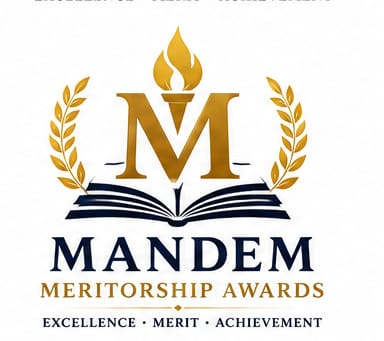
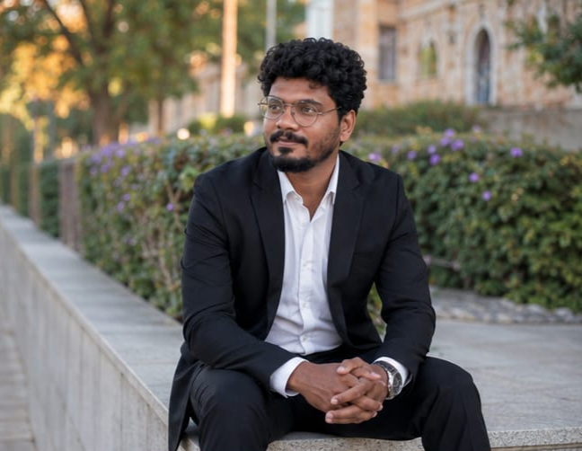

"Celebrating Excellence • Inspiring Futures"

Special Scientist (R)
B.Tech (India) | M.S. (Italy) | Ph.D. (Cyprus) – Ongoing
Founder & Head, The Mandem Meritorship Awards
My journey started from ZPHS Nooliveedu, where I studied from 6th to 10th standard. Coming from a rural and remote area, education was not always easy. Long walks, kilometres of travel, and bus journeys were part of the journey for many students like me.With the continuous support of my parents, teachers, and the encouragement received from my school, I was able to continue my education and move forward.
In 2014, I had the opportunity to become the first student from our school to achieve the highest academic score from its establishment until that year and the first student to secure admission into IIIT. I was fortunate to receive the Andhra Pradesh Government Prathibha Award, scholarships, and recognitions from various organisations. These encouragements inspired me to give something back to the institution where my journey began.
The Mandem Meritorship Awards is a small effort to encourage talented students of our school.The purpose is not only the reward, but the confidence, motivation, and inspiration created among students. I believe talent exists everywhere, including government schools. With proper encouragement and opportunities, every student can achieve great heights.
My sincere congratulations to all the parents, teachers, and the Government of Andhra Pradesh for their efforts in strengthening government education and making government schools more effective. Government school students have already proved that they can achieve excellence. I hope our school continues to inspire many more students in the future.
"Life teaches us — giving after becoming successful is charity, but helping while growing is gratitude. When someone needs support, even a small help at the right time can create a big difference."
Founder & Head
Ganesh Mandem
Associate Members
Associate Members
Advisory Members